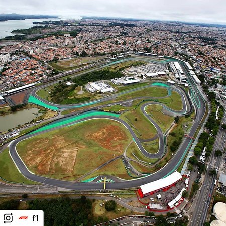
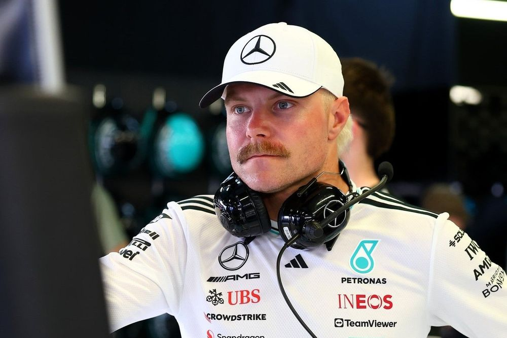

Notícia 1: A vitória de Hamilton na F1
A descrição completa da notícia vai aqui, com todos os detalhes sobre a vitória...
🏁 GP de São Paulo 2021 – Vitória Histórica de Lewis Hamilton em Interlagos
Data: 14 de novembro de 2021
Circuito: Autódromo José Carlos Pace (Interlagos), São Paulo, Brasil

Voltas: 71
Pole position: Valtteri Bottas (Mercedes)

Vencedor: Lewis Hamilton (Mercedes)
 Volta mais rápida: Lewis Hamilton – 1:11.010 (volta 59)
Volta mais rápida: Lewis Hamilton – 1:11.010 (volta 59)
🔥 Resumo da Corrida
Lewis Hamilton venceu de forma épica após largar em 10º lugar, realizar 25 ultrapassagens e superar Max Verstappen após uma intensa batalha. Completou a corrida em 1h32min22s851, 10.496s à frente de Verstappen.
📊 Estatísticas Importantes
- 101ª vitória de Hamilton na F1
- 3ª vitória no Brasil (2016, 2018, 2021)
- Volta mais rápida: Sim, na volta 59
- Ultrapassagens na corrida: 10
- Posição no Sprint: 5º
- Posição de largada final: 10º
🗣️ Reações
Lewis Hamilton: "Essa foi a corrida mais difícil e gratificante da minha carreira."
Max Verstappen: "Fizemos tudo que podíamos. Foi uma batalha intensa."
Toto Wolff: "Uma das maiores performances que já vi."
🧠 Estratégia da Mercedes
Hamilton usou pneus médios-duros-médios, enquanto a Red Bull tentou um undercut. A Mercedes foi precisa nas reações.
🏆 Impacto no Campeonato
- Verstappen: 332,5 pts
- Hamilton: 318,5 pts
- Diferença: 14 pts com 2 corridas restantes
👥 Repercussão
A mídia considerou a vitória "heróica". Hamilton emocionou ao homenagear Senna com a bandeira brasileira.
Notícia 2: Rally Dakar 2025 - Detalhes da competição
O Rally Dakar está chegando! Confira os carros e pilotos que prometem agitar a edição de 2025...
🏁 Dakar 2025
Data: 5 a 19 de janeiro de 2025
Local: Arábia Saudita
Distância: ~8.000 km
🚗 Carros de Destaque
- Toyota Hilux: Nasser Al-Attiyah – híbrido, suspensão reforçada
- Audi RS Q e-tron: Peterhansel – motor híbrido, torque instantâneo
- BRX Hunter T1+: Sébastien Loeb – navegação de ponta
🏎️ Pilotos de Destaque
- Al-Attiyah (Toyota)
- Peterhansel (Audi)
- Loeb (BRX)
- Carlos Sainz (Audi)
- Yazeed Al Rajhi (Toyota)
🌍 Nova Rota
Jeddah → Riyadh, com etapas em Rub' al Khali e mais foco em dunas e navegação.
💥 Sustentabilidade
A presença de veículos híbridos torna a edição 2025 um marco ecológico no rally.
📅 Calendário
12 etapas + 1 descanso, entre 5 e 19 de janeiro.
Notícia 3: O futuro do Formula Drift
O Formula Drift está mudando suas regras e trazendo novos carros para a temporada 2025...
🏁 Formula Drift 2025
Início: Março de 2025
Etapas: 8-10 nos EUA (possíveis eventos internacionais)
🚗 Carros de Destaque
- Nissan 240SX (James Deane): RB26DETT, controle de tração avançado
- Toyota Supra GR (Chris Forsberg): V8 turbo 5.6L, torque vectoring
- Ford Mustang RTR (Vaughn Gittin Jr.): 1.200 cv, suspensão ajustável
- BMW M4 (Chelsea DeNofa): turbo 3.0L, controle térmico aprimorado
- Chevrolet Camaro (Ryan Tuerck): V8 6.2L, novo kit aerodinâmico
⚙️ Novas Regras
- Limite de potência: 1.200 cv
- Estilo e consistência mais valorizados
- Categoria especial para carros elétricos
- Regras de segurança mais rígidas